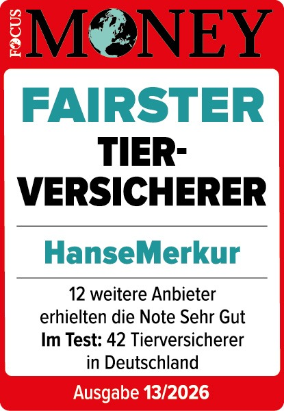

ab 28,19 €/Monat
Hundekrankenversicherung
Rundum-Schutz bei Krankheit, Unfall und Vorsorge – inklusive Operationen, Medikamenten und vielen alternativen Heilmethoden.
Mehr erfahrenVergleiche OP-Schutz und Krankenversicherung der HanseMerkur für Hund und Katze, berechne deinen Beitrag in zwei Minuten und sichere dir einen festen Ansprechpartner statt anonymer Hotline.


Fünf klar aufgebaute Produkte – von der günstigen OP-Absicherung bis zum Rundum-Schutz. Wähle, was zu deinem Tier und deinem Budget passt.
Rundum-Schutz bei Krankheit, Unfall und Vorsorge – inklusive Operationen, Medikamenten und vielen alternativen Heilmethoden.
Mehr erfahren ab 7,38 €/Monat
ab 7,38 €/MonatGezielte Absicherung gegen hohe Operationskosten – inklusive Diagnostik, Narkose sowie Vor- und Nachsorge.
Mehr erfahren ab 3,36 €/Monat
ab 3,36 €/MonatSchutz, wenn dein Hund einen Schaden verursacht – in vielen Bundesländern Pflicht, optional mit Giftköder-Schutz.
Mehr erfahren ab 14,28 €/Monat
ab 14,28 €/MonatUmfassender Schutz bei Krankheit und Unfall deiner Katze – je nach Tarif inklusive Vorsorge und Heilmethoden.
Mehr erfahren ab 4,32 €/Monat
ab 4,32 €/MonatGünstige Absicherung gegen teure Operationen – inklusive Diagnostik vor der OP und kompletter Nachsorge.
Mehr erfahrenHunde und Katzen werden dank guter Versorgung immer älter – und genau das führt über ein Tierleben hinweg zu mehr Tierarztbesuchen. Ein verschluckter Fremdkörper, ein Kreuzbandriss, eine chronische Nieren- oder Gelenkerkrankung: Solche Diagnosen sind keine Seltenheit, und die Behandlung geht schnell in die Tausende.
Seit der Reform der Gebührenordnung für Tierärzte (GOT) sind die Kosten für Behandlungen und Operationen zudem spürbar gestiegen. Eine Tierversicherung sorgt dafür, dass im Ernstfall die medizinisch beste Entscheidung zählt – und nicht die Frage, ob du sie dir gerade leisten kannst. Statt einer unkalkulierbaren Rechnung zahlst du einen festen, planbaren Monatsbeitrag.
Die Beiträge richten sich vor allem nach Tierart, Rasse, Alter bei Versicherungsbeginn und dem gewählten Leistungsumfang. Als Orientierung: Diese Einstiegsbeiträge gelten bei der HanseMerkur.
Je früher du dein Tier versicherst, desto günstiger ist in der Regel der Einstieg – und desto seltener stehen bereits Vorerkrankungen einer Aufnahme im Weg. Über die wählbare Selbstbeteiligung (ohne SB, 250 € oder 500 €) lässt sich der Beitrag zusätzlich an dein Budget anpassen. Wichtig ist, nicht am falschen Ende zu sparen: Eine einzige große Operation kann mehr kosten als mehrere Jahre Beitrag.
Beide Varianten haben ihre Berechtigung – die richtige Wahl hängt davon ab, wie umfassend du absichern möchtest und welches Budget zur Verfügung steht.
Sichert gezielt die teuersten Eingriffe ab: Operationen infolge von Krankheit und Unfall, inklusive Diagnostik, Narkose, Klinikaufenthalt und Nachsorge. Der ideale Einstieg für preisbewusste Halter und aktive, junge Tiere.
Deckt zusätzlich den gesamten Behandlungsalltag ab: Tierarztbesuche ohne OP, chronische Erkrankungen, Medikamente, Diagnostik und je nach Tarif sogar Vorsorge wie Impfungen oder Zahnreinigung.
Unsere Empfehlung: Wer ein begrenztes Budget hat, startet mit der OP-Versicherung als solider Basis. Wer die laufenden Gesundheitskosten planbar machen will, wählt die Krankenversicherung. Ein späterer Wechsel ist möglich – wir beraten dich zum richtigen Zeitpunkt.
Nicht jeder Tarif ist gleich – auf diese vier Punkte solltest du beim Vergleich besonders achten.
Tierärzte rechnen nach der Gebührenordnung ab, oft zum erhöhten Satz. Tarife, die bis zum 4-fachen GOT-Satz inklusive Notdienst erstatten, schützen dich auch bei teuren Notfällen vor hohen Eigenanteilen.
Sie bestimmt, bis zu welcher Summe pro Jahr Kosten übernommen werden. In den Premium-plus-Tarifen ist sie unbegrenzt – gerade bei schweren oder chronischen Erkrankungen ein entscheidender Vorteil.
Du behältst die freie Wahl deiner Praxis oder Klinik, und in vielen Fällen ist die direkte Abrechnung möglich – du musst nicht in Vorleistung gehen.
Typische Veranlagungen wie Ellbogen- (ED) oder Hüftdysplasie (HD) sind je nach Tarif bis zu einer festen Summe oder unbegrenzt abgesichert.
Früh versichert, lebenslang günstig – und ohne dass spätere Vorerkrankungen die Aufnahme erschweren.
Mehr Bewegung, mehr Risiko: Unfälle und Verletzungen sind hier wahrscheinlicher.
Bei bekannten Gesundheitsrisiken zahlt sich umfassender Schutz besonders aus.
Wer hohe Einmalkosten vermeiden will, profitiert vom festen Monatsbeitrag.
Keine wechselnden Hotline-Mitarbeiter. Du sprichst immer mit einem festen Team, das dich und dein Tier kennt.
Anliegen und Kostenerstattungen werden in der Regel innerhalb von 48 Stunden bearbeitet.
Telefon, WhatsApp oder E-Mail – du wählst den Weg, wir antworten schnell und verständlich.
Mehrfach ausgezeichneter Schutz mit Bedingungsupdate-Garantie und lebenslangem Versicherungsschutz.
Transparente Tarife ohne versteckte Selbstbeteiligung – du weißt immer, woran du bist.
Weltweiter Versicherungsschutz bei vorübergehenden Auslandsaufenthalten, je nach Tarif bis zu 12 Monate.
Mit der richtigen Tierversicherung verwandelst du unvorhersehbare Tierarztrechnungen in einen festen, planbaren Monatsbeitrag. Im Ernstfall zählt nur eines: dass dein Liebling schnell die beste Behandlung bekommt.
Berechne in zwei Minuten deinen Beitrag oder lass dich persönlich beraten – unverbindlich, kostenlos und mit festem Ansprechpartner.
Sag uns, ob es um Hund oder Katze geht und welcher Schutz dich interessiert – online oder in 2 Minuten am Telefon.
Wir berechnen den passenden Tarif für Rasse, Alter und Bedarf deines Tieres – verständlich erklärt, ohne Kleingedrucktes.
Du schließt direkt online ab oder mit Beratung. Danach bleibt dein fester Ansprechpartner für alles erreichbar.
Die richtige Tierversicherung hängt von der Lebenssituation deines Tieres ab. Die endgültige Feinabstimmung übernehmen wir gemeinsam in einem kurzen Gespräch.
Im jungen Alter ist dein Tier am günstigsten und ohne Vorerkrankungs-Ausschlüsse versicherbar. Ein früher Abschluss sichert dir niedrige Beiträge über das gesamte Tierleben. Für Hunde gehört die Hundehaftpflicht von Tag eins dazu.
Hier lohnt sich die Entscheidung zwischen günstiger OP-Absicherung und umfassendem Rundum-Schutz. Wer flexibel bleiben will, wählt die OP-Versicherung; wer laufende Behandlungen und Vorsorge planbar machen möchte, die Krankenversicherung.
Auch ältere Tiere lassen sich bis zu einem Eintrittsalter von 8 Jahren versichern. Gerade im Alter steigen Behandlungsbedarf und Kosten, weshalb sich umfassender Schutz besonders auszahlt – Tarif und Selbstbeteiligung stimmen wir individuell ab.
Freigänger-Katzen haben ein höheres Unfallrisiko, Hunderassen mit Veranlagung für ED oder HD ein erhöhtes Krankheitsrisiko. In beiden Fällen empfiehlt sich ein Tarif mit hoher Jahreshöchstentschädigung und Absicherung rassespezifischer Erkrankungen.
Damit du Tarife wirklich vergleichen kannst, erklären wir die wichtigsten Fachbegriffe in einem Satz.
Die Gebührenordnung für Tierärzte legt fest, was Behandlungen kosten dürfen. Tarife mit Erstattung bis zum 4-fachen Satz decken auch teure Notfälle und Spezialbehandlungen ab.
Der Anteil der Kosten, den du im Schadenfall selbst trägst. Eine höhere SB (250 € oder 500 €) senkt deinen Monatsbeitrag, eine niedrige SB erhöht ihn.
Die Zeitspanne nach Vertragsbeginn, in der noch kein Leistungsanspruch besteht. Bei Unfällen entfällt sie, allgemein beträgt sie einen Monat.
Der Maximalbetrag, den die Versicherung pro Jahr übernimmt. In den Premium-plus-Tarifen ist er unbegrenzt – ein großer Vorteil bei schweren Erkrankungen.
Ein jährliches Budget für vorbeugende Leistungen wie Impfungen, Wurmkuren oder Zahnreinigung, das in den Premium-Tarifen der Krankenversicherung enthalten ist.
Auch das Verschlucken von Fremdkörpern oder Vergiftungen gelten als Unfall – und sind damit ohne Wartezeit sofort mitversichert.
Wird dein Tier krank oder verletzt, soll die Abwicklung möglichst einfach sein. Bei der HanseMerkur Tierversicherung läuft das in der Regel in vier Schritten – und dein persönlicher Ansprechpartner begleitet dich dabei.
Treten Fragen auf, erreichst du uns jederzeit telefonisch, per WhatsApp oder E-Mail – ohne Warteschleife und ohne wechselnde Ansprechpartner.
OP-Schutz und Krankenversicherung in den Stufen Komfort, Premium und Premium plus – vollständig und mit allen Hinweisen.
| Leistung | OP-SchutzKomfort | OP-SchutzPremium | OP-SchutzPremium plus | Krankenvers.Komfort | Krankenvers.Premium | Krankenvers.Premium plus |
|---|---|---|---|---|---|---|
| Allgemein | ||||||
| Jahreshöchstentschädigung für Operationen auf Grund von Krankheit oder Unfall | 2.500 EUR | 5.000 EUR | Unbegrenzt | 2.500 EUR | 5.000 EUR | Unbegrenzt |
| Jahreshöchstentschädigung für Allgemeine Behandlungen auf Grund von Krankheit oder Unfall | ✗ | ✗ | ✗ | 2.500 EUR | 5.000 EUR | Unbegrenzt |
| Erstattungshöhe von Tierarztrechnungen nach GOT¹ inkl. anfallender Notdienstgebühren | 3-facher Satz, keine Notdienstgebühr | 4-facher Satz | 4-facher Satz | 3-facher Satz, keine Notdienstgebühr | 4-facher Satz | 4-facher Satz |
| Höchsteintrittsalter für Hunde und Katzen⁴ | 8 Jahre | 8 Jahre | 8 Jahre | 8 Jahre | 8 Jahre | 8 Jahre |
| Selbstbeteiligung (SB) – Wählbare Optionen: ohne SB / 250 EUR SB / 500 EUR SB² | Mit SB optional, ohne SB bis Eintrittsalter 5 Jahre | Mit SB optional, ohne SB bis Eintrittsalter 5 Jahre | Mit SB optional, ohne SB bis Eintrittsalter 5 Jahre | Mit SB optional, ohne SB bis Eintrittsalter 5 Jahre | Mit SB optional, ohne SB bis Eintrittsalter 5 Jahre | Mit SB optional, ohne SB bis Eintrittsalter 5 Jahre |
| Freie Tierarzt- und Klinikwahl | ✓ | ✓ | ✓ | ✓ | ✓ | ✓ |
| Direkte Abrechnung mit dem Tierarzt möglich | ✓ | ✓ | ✓ | ✓ | ✓ | ✓ |
| Telemedizin | ✓ | ✓ | ✓ | ✓ | ✓ | ✓ |
| Leistungen⁵ | ||||||
| Chirurgischer Eingriff (die Haut und das darunterliegende Gewebe werden mehr als punktförmig durchtrennt) | ✓ | ✓ | ✓ | ✓ | ✓ | ✓ |
| Wundversorgung durch Nähen | ✓ | ✓ | ✓ | ✓ | ✓ | ✓ |
| Minimalinvasive Eingriffe (Operationen mit Endoskop) | ✓ | ✓ | ✓ | ✓ | ✓ | ✓ |
| Erweiterter Unfallbegriff: Verschlucken von Fremd-/Schadstoffen und Vergiftungen gelten als Unfall | ✓ | ✓ | ✓ | ✓ | ✓ | ✓ |
| Heilbehandlung (Behandlungen ohne Operation) | ✗ | ✗ | ✗ | ✓ | ✓ | ✓ |
| Diagnostik: Berücksichtigung sämtlicher Untersuchungen zur Diagnosestellung | Kosten für letzten Vorbereitungstag u. OP-Tag | Kosten für letzten Vorbereitungstag u. OP-Tag | Kosten für letzten Vorbereitungstag u. OP-Tag | ✓ | ✓ | ✓ |
| Medikamente und Verbrauchsmaterialien | 15 Tage | 30 Tage | 60 Tage | Unbegrenzt | Unbegrenzt | Unbegrenzt |
| Unterbringung in Tierklinik | 15 Tage | 30 Tage | 60 Tage | Unbegrenzt | Unbegrenzt | Unbegrenzt |
| Nachbehandlungen | 15 Tage | 30 Tage | 60 Tage | Unbegrenzt | Unbegrenzt | Unbegrenzt |
| Operationen und Heilbehandlungen bei besonderen Erkrankungen/Diagnosen (z.B. Ellbogendysplasie (ED), Hüftdysplasie (HD)) | ✗ | 5.000 EUR⁶ | Unbegrenzt | ✗ | 5.000 EUR⁶ | Unbegrenzt |
| Kastration oder Sterilisation, medizinisch indiziert | ✓ | ✓ | ✓ | ✓ | ✓ | ✓ |
| Kastration oder Sterilisation, unabhängig von medizinischer Indikation | ✗ | ✗ | Einmalig 100 EUR | ✗ | Im Rahmen der Vorsorge bis 75 EUR | Im Rahmen der Vorsorge bis 100 EUR |
| Physiotherapie, Osteopathie und Chiropraktik nach der OP | 15 Tage | 30 Tage | 60 Tage | 15 Tage, danach zusätzlich 100 EUR jährlich | 30 Tage, danach zusätzlich 250 EUR jährlich⁷ | 60 Tage, danach zusätzlich 250 EUR jährlich⁷ |
| Alternative Behandlungsmethoden, z. B. Homöopathie, Akupunktur und Lasertherapie nach der OP | ✗ | 30 Tage | 60 Tage | ✗ | 30 Tage, danach zusätzlich 250 EUR jährlich⁷ | 60 Tage, danach zusätzlich 250 EUR jährlich⁷ |
| Hilfsmittel (z.B. Orthesen, Gehstützen, Geschirr, Rollstühle, Tragevorrichtungen, Halskragen) | ✗ | 250 EUR⁶ | 250 EUR⁶ | ✗ | 250 EUR⁶ | 250 EUR⁶ |
| Prothesen und Implantate | ✗ | 500 EUR⁶ | 500 EUR⁶ | ✗ | 500 EUR⁶ | 500 EUR⁶ ⁸ |
| Goldakupunktur, Golddrahtimplantation | ✗ | ✗ | 100 EUR | ✗ | ✗ | 500 EUR⁸ |
| Einschläfern durch Injektion (bei Unfall oder Krankheit) | ✓ | ✓ | ✓ | ✓ | ✓ | ✓ |
| Vorsorgende Behandlungen | ||||||
| Vorsorge und vorbeugende Behandlungen – Jahreshöchstentschädigung | ✗ | ✗ | ✗ | ✗ | 75 EUR | 100 EUR |
| Zum Beispiel für: Schutzimpfungen, Floh- und Zeckenvorsorge, Wurmkuren, Zahnreinigung inkl. Zahnpolitur und Zahnsteinentfernung, Geriatrisches Screening, Kennzeichnung per Chip | ✗ | ✗ | ✗ | ✗ | ✓ | ✓ |
| Wartezeiten | ||||||
| Wartezeit bei Unfällen | Keine | Keine | Keine | Keine | Keine | Keine |
| Allgemeine Wartezeit | 1 Monat | 1 Monat | 1 Monat | 1 Monat | 1 Monat | 1 Monat |
| Erkrankungen/Diagnosen mit besonderer Wartezeit | Nicht versichert | 12 Monate | 6 Monate | Nicht versichert | 12 Monate | 6 Monate |
| Wartezeit für Prothesen, Implantate | Nicht versichert | 12 Monate | 12 Monate | Nicht versichert | 12 Monate | 12 Monate |
| Goldakupunktur, Golddrahtimplantation | Nicht versichert | Nicht versichert | 12 Monate | Nicht versichert | Nicht versichert | 12 Monate |
| Anrechnung Wartezeiten bei nahtloser Vorversicherung bei der HanseMerkur | ✓ | ✓ | ✓ | ✓ | ✓ | ✓ |
| Reisen | ||||||
| Schutz bei vorübergehenden Auslandsaufenthalten | 3 Monate, weltweit | 6 Monate, weltweit | 12 Monate, weltweit | 3 Monate, weltweit | 6 Monate, weltweit | 12 Monate, weltweit |
| Erstattung von Stornokosten bei Nichtantritt einer Urlaubsreise bei unfallbedingten Operationen | ✗ | 500 EUR | 1.000 EUR | ✗ | 500 EUR | 1.000 EUR |
| Kosten für medizinisch notwendigen Rücktransport aus dem Ausland bei erforderlicher Operation | ✗ | 500 EUR | 500 EUR | ✗ | 500 EUR | 500 EUR |
| Garantien | ||||||
| Stabiler Beitrag: keine Beitragserhöhungen bei steigendem Tieralter | ✓ | ✓ | ✓ | Moderate Anpassung nach dem 3., 5., 7. und 9. Geburtstag des Tieres | Moderate Anpassung nach dem 3., 5., 7. und 9. Geburtstag des Tieres | Moderate Anpassung nach dem 3., 5., 7. und 9. Geburtstag des Tieres |
| Verlängerte Widerrufsfrist 45 Tage | ✓ | ✓ | ✓ | ✓ | ✓ | ✓ |
| Tägliches Kündigungsrecht des Versicherungsnehmers ab dem 2. Versicherungsjahr | ✓ | ✓ | ✓ | ✓ | ✓ | ✓ |
| Kündigungsschutz im Schadenfall ab Versicherungsbeginn | ✓ | ✓ | ✓ | ✓ | ✓ | ✓ |
| Lebenslanger Versicherungsschutz ab dem 4. Versicherungsjahr | ✓² | ✓² | ✓² | ✓² | ✓² | ✓³ |
| Bedingungsupdate-Garantie: Künftige Leistungsverbesserungen gelten automatisch | ✓ | ✓ | ✓ | ✓ | ✓ | ✓ |
| Optionale Bausteine | ||||||
| Empfehlung – Zusatztarif Zahn u.a. Zahnextraktion, Wurzelbehandlungen, Zahnfüllungen, Zahnsatz und Korrektur von Zahn- und Kieferanomalien | ✗ | Optional | Optional | ✗ | Optional | Optional |
| Tier Assistance u.a. Unterbringung des Tieres, z.B. bei Unfall oder Krankheit des Besitzers, Vermittlung einer Tierbetreuung bei Urlaub | Optional | Optional | Optional | Optional | Optional | Optional |
| Vorsorge Plus: Erhöhung der Vorsorgepauschale auf 250 EUR jährlich, Leistungen u.a. für Tier-Verhaltenstherapie, Erstellung EU-Heimtierausweis, Diätmittel, Vitamin-/Mineralstoffpräparate | ✗ | ✗ | ✗ | ✗ | ✗ | Optional |
Bei uns sprichst du nicht mit wechselnden Callcenter-Mitarbeitern, sondern mit einem festen Team rund um Steven Zupp. Vom ersten Tarifvergleich über den Abschluss bis zur Kostenerstattung begleiten wir dich persönlich, verständlich und ohne Warteschleife.
Du erreichst uns telefonisch, per WhatsApp oder E-Mail. Anliegen bearbeiten wir in der Regel innerhalb von 48 Stunden.
Eine einzige Operation kann je nach Diagnose schnell mehrere Tausend Euro kosten. Mit einer Tierversicherung entscheidest du im Ernstfall nach dem, was medizinisch das Beste für dein Tier ist – nicht nach deinem Kontostand. Du tauschst unkalkulierbare Tierarztrechnungen gegen einen planbaren Monatsbeitrag.
Die OP-Versicherung ist die günstige Grundabsicherung und übernimmt Operationen samt Diagnostik sowie Vor- und Nachsorge. Die Krankenversicherung geht deutlich weiter: Sie deckt zusätzlich Behandlungen ohne OP, Medikamente, Diagnostik und je nach Tarif auch Vorsorge ab.
Die Beiträge starten bei 3,36 € für die Hundehaftpflicht, 4,32 € für die Katzen-OP-Versicherung und 7,38 € für die Hunde-OP-Versicherung. Krankenversicherungen beginnen bei 14,28 € (Katze) bzw. 28,19 € (Hund). Der genaue Beitrag hängt von Tierart, Rasse, Alter und Tarif ab.
Bei Unfällen gilt keine Wartezeit – der Schutz greift sofort. Die allgemeine Wartezeit beträgt nur einen Monat. Für einzelne besondere Erkrankungen gelten je nach Tarif längere Wartezeiten von 6 bis 12 Monaten.
Ja. Das reguläre Höchsteintrittsalter liegt bei 8 Jahren. Welcher Tarif für ein älteres Tier am besten passt, klären wir gemeinsam – ruf uns einfach an oder fordere ein Angebot an.
Du reichst die Tierarztrechnung bei uns ein, oft ist sogar die direkte Abrechnung mit der Praxis möglich. Dein persönlicher Ansprechpartner kümmert sich um eine zügige Bearbeitung – in der Regel innerhalb von 48 Stunden.
Berechne in zwei Minuten deinen Beitrag oder lass dich persönlich beraten – unverbindlich und kostenlos.